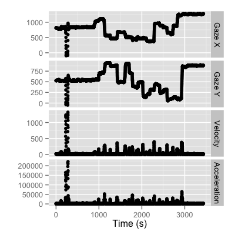
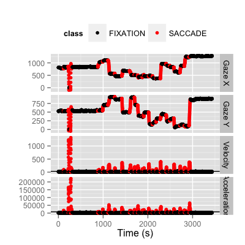

pvaclassify
(optional)Plot the pva class
data(smi) d.pva <- with(smi, pva(smi_sxl, smi_syl, smi_time, 500, 1680, 1050, 473.76, 296.1, smi_ezl, smi_exl, smi_eyl)) plot(d.pva)
data(smi) d.pva <- with(smi, pva(smi_sxl, smi_syl, smi_time, 500, 1680, 1050, 473.76, 296.1, smi_ezl, smi_exl, smi_eyl)) d.c <- classify.VA(d.pva@v, d.pva@a) plot(d.pva, d.c)Warning message: Removed 1 rows containing missing values (geom_segment). Warning message: Removed 1 rows containing missing values (geom_segment).